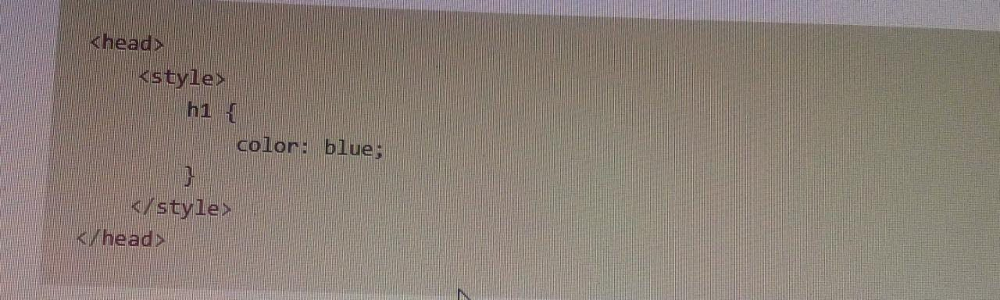
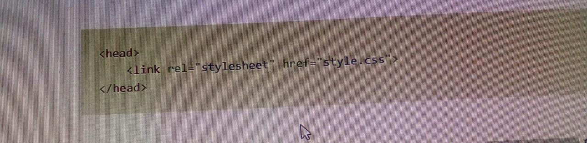

CSS (Cascading Style Sheets) is what makes web pages look good and presentable. It’s an essential part of modern web development and a must-have skill for any web designer and developer.
What is CSS?
CSS stands for Cascading Style Sheets
CSS describes how HTML elements are to be displayed on screen, paper, or in other media
CSS saves a lot of work. It can control the layout of multiple web pages all at once
External stylesheets are stored in CSS files
In this article, I’ll give you a quick introduction to help you get started with CSS.
Getting Started
Let’s start with learning how we can include CSS in our projects. There are typically three ways we do that.
1. Inline CSS
First off, we can include CSS directly in our HTML elements. For this, we make use of the style attribute and then we provide properties to it.Here we’re giving it the property of color, and setting the value to blue, which results in the following: We can also set multiple properties inside the style tag if we wanted. However, I don’t want to continue down this path, as things start to get messy if our HTML is cluttered with lots of CSS inside it.
This is why the second method to include CSS was introduced.
2. Internal CSS
The other way to include CSS is using the style element in the head section of the HTML document. This is called internal styling.In the style element, we can give the styling to our HTML elements by selecting the element(s) and provide styling attributes. Just like we applied thecolorproperty to the h1 element above.

3. External CSS
The third and most recommended way to include CSS is using an external stylesheet. We create a stylesheet with a .css extension and include its link in the HTML document In the code above, we have included the link of style.css file using the link element. We then write all of our CSS in a separate stylesheet called style.css so that it’s easily manageable This stylesheet can also be imported into other HTML files, so this is great for reusability.

CSS Selectors
CSS selectors are used to "find" (or select) the HTML elements you want to style.
We can divide CSS selectors into five categories:
-Simple selectors (select elements based on name, id, class)
-Combinator selectors (select elements based on a specific relationship between them)
-Pseudo-class selectors (select elements based on a certain state)
-Pseudo-elements selectors (select and style a part of an element)
-Attribute selectors (select elements based on an attribute or attribute value)